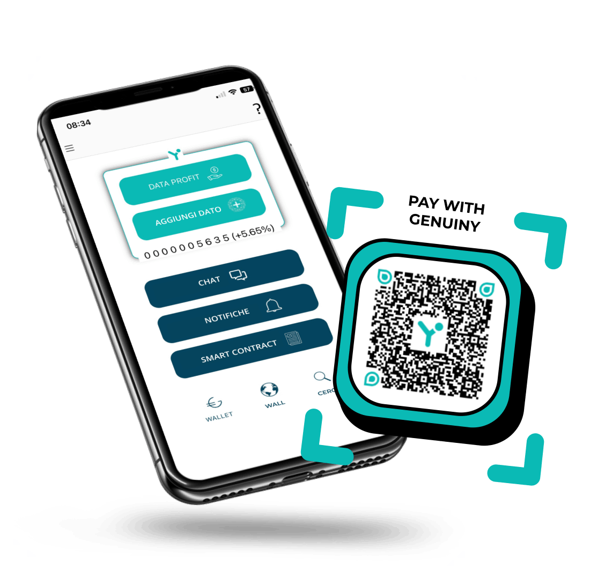

Dati reali
certificati.

Digital Profit Genuiny
Genuiny consente ai propri utenti certificati (Autentica account) la possibilità di utilizzare il valore dell'economia digitale (direttiva UE 2019/770) per acquistre beni e servizi in tutto il ciurcuito fisico e online "Genuiny Point".
Info Digital Profit
FAQ
La tecnologia etica significa l'uso responsabile e morale della tecnologia per promuovere il benessere degli individui, della società e del pianeta. Significa rispetto della privacy, della dignità e dei diritti umani.
L'obiettivo della tecnologia etica è quello di creare una tecnologia che porti benefici a ogni singolo individuo, alla società nel suo complesso e non solo a pochi eletti.
Perchè è conveniente usarla e diffonderla?
Ci sono diversi motivi per cui l'uso di una tecnologia etica può essere più vantaggioso:
- Fiducia e reputazione
Le aziende e le organizzazioni che utilizzano tecnologie etiche hanno maggiori probabilità di costruire fiducia e credibilità con i clienti, i dipendenti e gli altri stakeholder, in quanto dimostrano un impegno verso la trasparenza, la correttezza e l'uso responsabile della tecnologia. - Sostenibilità a lungo termine
La tecnologia etica è progettata tenendo conto delle conseguenze a lungo termine e dell'impatto della tecnologia sulla società e sull'ambiente. Questo approccio porta a risultati più sostenibili nel lungo periodo, rispetto alle speculazioni a breve termine della tecnologia commerciale. - Migliore esperienza dell'utente
La tecnologia etica spesso dà priorità all'esperienza dell'utente, alla privacy e alla sicurezza, dando vita a prodotti e servizi più facili da usare e affidabili. - Maggiore innovazione
Considerando l'impatto della tecnologia sulla società e sull'ambiente, la tecnologia etica incoraggia l'innovazione che si concentra sulla soluzione dei problemi del mondo reale e sulla promozione del bene sociale, piuttosto che sulla semplice massimizzazione del profitto per pochi a danno di tutti gli atri. - Maggiore conformità e riduzione dei rischi
La tecnologia etica è spesso progettata per essere conforme alle leggi e alle normative vigenti, riducendo il rischio di problemi legali o normativi.
Nel complesso, l'uso di una tecnologia etica può offrire molti vantaggi, tra cui una migliore reputazione, una sostenibilità a lungo termine, una migliore esperienza per gli utenti, una maggiore innovazione e una riduzione dei rischi, rendendola un'opzione più interessante possibile per privati, aziende e organizzazioni.
La blockchain è una tecnologia di registro distribuito peer to peer che funziona come una grande catena di blocchi interconnessi.
Ogni blocco contiene informazioni come transazioni, identità e altri dati importanti, e una volta inserito in un blocco, questo diventa immutabile e accessibile a tutti i partecipanti alla rete.
La blockchain utilizza un sistema di crittografia avanzato per garantire la sicurezza dei dati e la trasparenza delle transazioni, e la sua struttura decentralizzata significa che non c'è bisogno di un intermediario affidabile per gestire e registrare le transazioni.
Questa tecnologia viene utilizzata in molte altre applicazioni, tra cui la tracciabilità dei beni, la gestione della supply chain, la votazione elettronica e la creazione di identità digitali sicure.
La blockchain è diventata uno strumento potente per migliorare la trasparenza, la sicurezza e la responsabilità nei processi digitali.
E' l'innovativa blockchain etica nella quale gli utenti sono al centro del sistema digitale e i validatori delle proprie reti dati (dai personali, biometrici, all'internet delle cose, le intelligenze artificiali, i neurochips etc).
La blockchain Genuiny include diversi fattori quali la privacy, la sicurezza, l'inclusività e la decentralizzazione nello sviluppo e nella diffusione di soluzioni blockchain utilizzabili dalle persone con un click.
Ad esempio, una blockchain etica significa progettare sistemi di blockchain che rispettino la privacy degli utenti, non raccogliendo o memorizzando dati personali non necessari, o garantire che la distribuzione del potere e del controllo all'interno della rete sia equa e trasparente.
Blockchain etica significa utilizzare la tecnologia blockchain per promuovere il bene sociale e la sostenibilità, ad esempio attraverso l'uso della blockchain per la gestione della catena di approvvigionamento o per promuovere l'inclusione finanziaria.
L'obiettivo di una blockchain etica è quello di sfruttare il potenziale di questa tecnologia a beneficio della società, evitando al contempo potenziali conseguenze negative come una maggiore centralizzazione o lo sfruttamento dei dati degli utenti.
Questi includono aspetti come la trasparenza, la responsabilità, l'equità e il rispetto della privacy.
Nel contesto della blockchain, le pratiche etiche possono significare l'utilizzo della tecnologia per promuovere la decentralizzazione e ridurre la concentrazione di potere nelle mani di pochi, garantire che le transazioni siano sicure e non possano essere alterate o cancellate, e proteggere la privacy degli utenti criptando i loro dati.
Un altro aspetto della blockchain etica è l'uso responsabile della blockchain per l'impatto sociale e ambientale.
Ad esempio, la blockchain può essere utilizzata per creare catene di approvvigionamento più efficienti e trasparenti, tracciare l'origine dei prodotti e contribuire a ridurre gli sprechi e i danni ambientali.
La blockchain etica cerca anche di affrontare il consumo energetico e l'impatto ambientale dei sistemi blockchain crypto, poiché in esse il processo di verifica delle transazioni richiede molta energia e ha un impatto significativo sull'ambiente.
Promuoviamo l'uguaglianza, l’etica e la giustizia, in una strategia d'innovazione e sviluppo incentrato sull’essere umano e sul pianeta.
Genuiny è un azienda multi-uomo, innovativa, nel vero senso della parola. Negli anni abbiamo lavorato con impegno in un'atmosfera di creatività, test e sfide continue per consentire agli utenti di crearsi una propria rete dati, un proprio patrimonio digitale mediante un sistema di produzione dati certificato.
Lo scenario globale è in continuo e veloce mutamento e la tecnologia etica porterà importanti vantaggi alle economie locali e all'ambiente.
Genuiny desidera migliorare la vita del maggior numero di persone possibile, in modo decentrato e democratico per sviluppare assieme una tecnologia personale sicura, che migliori significativamente la vita degli individui , delle loro famiglie e società.
"Lo sviluppo delle nuove tecnologie è un insieme di fattori scientifici, tecnici, commerciali e sociali complessi, interconnessi e comunicanti tra loro, non sempre evidenti a chi, per ragioni didattiche o culturali desidera accostarsi a tali strutture." On'relas
Aderiamo ai 10 principi di stile a cui ispirarsi per una narrazione scientifica trasparente, onesta e corretta.
MILESTONES
- 2021 Genuiny NFTP, certificati blockchain ad uso pubblico e privato.
- 2020 Genuiny Blockchain Factory, Genuiny Blockchain Hub.
- 2019 Genuiny Blockchain Point, Genuiny Blockchain Informer.
- 2018 Genuiny Blockchain Card: app per la produzione e lo scambio di dati e valori a denominazione d'origine controllata.
- 2017 Pubblicazione "GlocalGame": semplice dissertazione, manuale/guida della tecnologia etica Genuiny.
- 2015 c/o Area Scienze Park Trieste: progetto etichette “live” Genuiny per l'EXPO di milano: THE LIVE LABEL, le etichette di nuova concezione che visualizzano la filera del dati di prodotti e servizi certificati e in tempo reale.
- 2014 Virtuositycard.com: test sulle loyality blockchain card.
- 2011 Free2free.net: progetto per una rete di telecomunicazioni civile, peer to peer, di proprietà degli utenti che la usano.
- 2010 Pubblicazione Vietato Leggere/Vietato Perdere: teoria tele-homo-centrica "Pioggia dal Basso". Tratta dell'evoluzione dell' Homo Sapiens Sapiens in Homo.2.
- 2007 Nostandard.org: organizzazione delle interconnessioni globali.
- 2006 Paginetiche.com: elenco/guida per la responsabilità etica delle imprese.
- 2005 Kards.net: deposito del brevetto codice generativo B.A.N. code (Blockchain Algorithm Number) che identifica univocamente qualsiasi produzione dati personale, privata e pubblica.
- 2004 Pubblicazione ITsense: l'internet sensoriale.
- L'internet sensoriale è la telecomunicazione neuronale non invasiva.
- Allora il soggetto esce in contrapposizione al brevetto Microsoft (numero 6.754.472 del Patent and Trademark Office americano) che stabilisce che il corpo umano non è nostro, non è di proprietà dell'individuo ma è un “conduttore” di proprietà Microsoft. Da allora ad oggi si sono sviluppati diversi prodotti di impianti neuronali di proprietà esclusiva delle multinazionali, tipo Neuralink di Helon Musk.
- 2003 Pubblicazione "Teoria Uno e Molti" di internet e dell'umanologia applicata in rete.
- 2000 Gatesguide.com: sistema di produzione automatico di siti e portali senza il bisogno d'intermediari, tecnici etc.
- 1997 Videocoupon: editor web personale.
prodotti
Certify Genuiny
Prodotti e servizi autentici, a denominazione d'origine geolocalizzata certificata con la blockchain.
More info